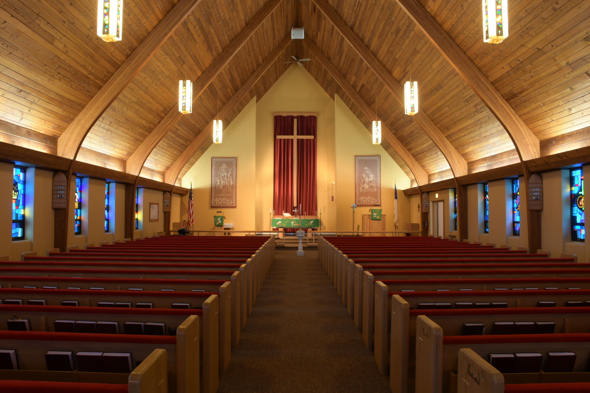

Grace Lutheran Church
Spring 2022
I volunteered to create pages for the church directory and sesquicentennial history book. I attended many council meetings to complete the projects. It was a great way to give back to the church I grew up attending.
Church Directory - 2022 In Commemoration of 150 Years
